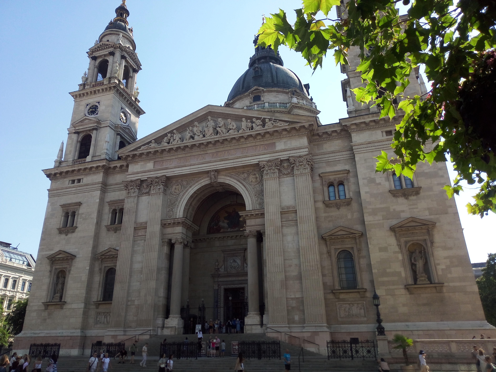

St. Stephen's Basilica
Budapest · Hungary
St. Stephen's Basilica is one of Budapest's most impressive religious and architectural landmarks. Named after Stephen, the first King of Hungary, the basilica stands in the heart of the city and is known for its monumental dome, elegant neoclassical façade, and richly decorated interior. Completed in 1905, it has become an important symbol of Hungarian history, national identity, and cultural heritage. Its spacious square and surrounding streets create a lively setting, while the building itself offers a striking presence among Budapest's historic streets. The basilica is also notable for its impressive interior details, including elaborate decorations, sculptures, and religious artwork. Visitors can admire the architecture from the square or explore the interior to appreciate its scale and craftsmanship. These photographs capture my personal impressions of this remarkable landmark and its surroundings, reflecting a memorable part of my experience in Budapest.
My Photo Gallery
Explore my personal travel photographs of St. Stephen's Basilica, its architecture, and its surroundings in Budapest.
View All Photos ↗